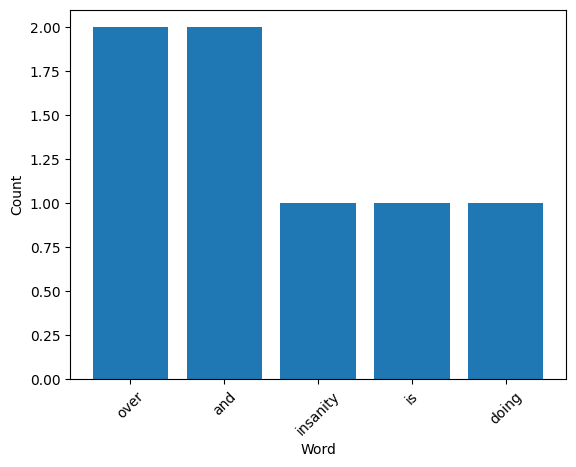

Example usage
Here we will demomnstrate how to use ndr_attributes to count the words in a text file and plot the top 5 results
Imports
from ndr_attributes.ndr_attributes import count_words
from ndr_attributes.plotting import plot_words
Create a Text File
We’ll first create text file work with using a famous quote from einstein:
quote = "Insanity is doing the same thing over and over and expecting different results."
with open("einstein.txt", "w") as file:
file.write(quote)
Count Words
counts = count_words("einstein.txt")
print(counts)
Counter({'over': 2, 'and': 2, 'insanity': 1, 'is': 1, 'doing': 1, 'the': 1, 'same': 1, 'thing': 1, 'expecting': 1, 'different': 1, 'results': 1})
Plot Words
fig = plot_words(counts, n = 5)
